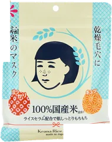
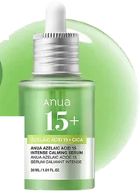
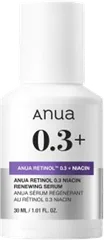
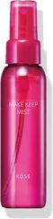

10位

毛穴撫子
お米のマスク 10枚入
10枚
¥715税込・出典掲載価格
クチコミの要約
- シートが厚くて液たっぷり
- もう何回目かわからん
気になる声アルコール強めって声も
販売価格・容量・送料はリンク先でご確認ください
THE COSME EDIT / 2026.09.11
動画で紹介した8品です。順位は元の記事のまま、楽天に扱いのないものは外しています。
08 ITEMS 動画で紹介した商品
4位は同一商品を特定できず、8位は楽天で取り扱いを確認できなかったため掲載していません。順位は出典のままです。
価格は出典掲載時のものです。楽天の現在価格とは異なる場合があります。

毛穴撫子
10枚
¥715税込・出典掲載価格
クチコミの要約
気になる声アルコール強めって声も
販売価格・容量・送料はリンク先でご確認ください

アヌア
30ml
¥2,581税込・出典掲載価格
クチコミの要約
気になる声乾燥するって人も
販売価格・容量・送料はリンク先でご確認ください

アヌア
30ml
¥2,970税込・出典掲載価格
クチコミの要約
気になる声合う合わないはある
販売価格・容量・送料はリンク先でご確認ください

ビオレ
200g
¥878税込・出典掲載価格
クチコミの要約
気になる声泡の洗顔が好きな人も
販売価格・容量・送料はリンク先でご確認ください

アヌア
30ml
¥2,970税込・出典掲載価格
クチコミの要約
気になる声物足りない人もいる
販売価格・容量・送料はリンク先でご確認ください

メラノCC
130g
¥787税込・出典掲載価格
クチコミの要約
気になる声つっぱる人もいる
販売価格・容量・送料はリンク先でご確認ください

コーセー
80ml
¥1,430税込・出典掲載価格
クチコミの要約
気になる声匂いは好みが分かれる
販売価格・容量・送料はリンク先でご確認ください

ダルバ
50ml
¥1,430税込・出典掲載価格
クチコミの要約
気になる声香りがキツいって人も
販売価格・容量・送料はリンク先でご確認ください
SOURCE & NOTES
集計期間：2025年8月〜2026年1月の売上です。今の売れ筋順ではありません。
（メラノCCは2026年4月1日以降の価格）